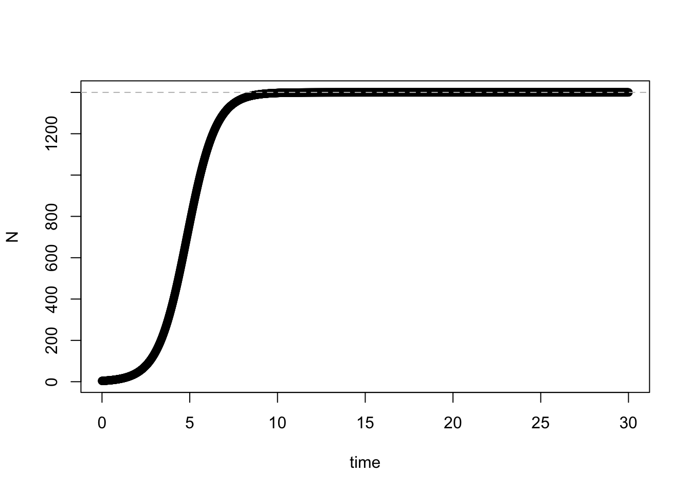

Module 2.2, Lecture 2.2 Notes
Jelena H. Pantel
2023-11-09 10:56:40
Topic 1. Working simulation of models
Exponential growth, discrete time
The formula:
\[ n_{t+1} = Rn_t\] The code:
# Parameter values to use for simulation
R <- 1.7
N0 <- 42
t <- 100
# model function
disc_exp <- function(R, N0) {
Nt1 <- R * N0
return(Nt1)
}
# Simulation of model for t time steps
N <- rep(NA, t)
for (i in 1:t) {
N[i] <- disc_exp(R, N0)
N0 <- N[i]
}
# Plot simulation: ggplot
dat <- as.data.frame(N)
dat$time <- as.numeric(rownames(dat))
ggplot2::ggplot(dat, aes(time, N)) + geom_point()Exponential growth, continuous time
The formula:
\[ \frac{dn}{dt} = rn\] The code:
# Parameter values to use for simulation
parameters <- c(r = 1.7)
state <- c(N = 42)
times <- seq(0, 100, by = 0.01)
# model function
cont_exp <- function(t, state, parameters) {
with(as.list(c(state, parameters)), {
dN <- r * N
return(list(dN))
})
}
# Simulation of model for t time steps
out <- deSolve::ode(y = state, times = times, func = cont_exp,
parms = parameters)
# Plot simulation: ggplot
out.g <- as.data.frame(out)
ggplot2::ggplot(out.g, aes(time, N)) + geom_line()Logistic growth, discrete time
The formula:
\[n_{t+1} = n_t + rn_t(1 - \frac{n_t}{K})\]
The code:
# Parameter values to use for simulation
r <- 1.21
K <- 1400
N0 <- 4
t <- 30
# model function
disc_log <- function(r, N0, K) {
Nt1 <- N0 + r * N0 * (1 - N0/K)
return(Nt1)
}
# Simulation of model for t time steps
N <- rep(NA, t)
for (i in 1:t) {
N[i] <- disc_log(r, N0, K)
N0 <- N[i]
}
# Plot simulation: ggplot
dat <- as.data.frame(N)
dat$time <- as.numeric(rownames(dat))
ggplot2::ggplot(dat, aes(time, N)) + geom_point() + geom_hline(yintercept = K,
linetype = "dashed", color = "gray")
# Plot simulation: base R
plot(N, xlab = "time", ylab = "N", pch = 19, col = "black")
abline(h = K, col = "grey", lty = "dashed")
Logistic growth, continuous time
The formula:
\[ \frac{dn}{dt} = rn(1-\frac{n}{K})\] The code:
# Parameter values to use for simulation
parameters <- c(r = 1.21, K = 1400)
state <- c(N = 4)
times <- seq(0, 30, by = 0.01)
# model function
cont_log <- function(t, state, parameters) {
with(as.list(c(state, parameters)), {
dN <- r * N * (1 - N/K)
return(list(dN))
})
}
# Simulation of model for t time steps
out <- deSolve::ode(y = state, times = times, func = cont_log,
parms = parameters)
# Plot simulation: ggplot
out.g <- as.data.frame(out)
ggplot2::ggplot(out.g, aes(time, N)) + geom_line() + geom_hline(yintercept = K,
linetype = "dashed", color = "gray")
# Plot simulation: base R
plot(out.g$time, out.g$N, xlab = "time", ylab = "N", pch = 19,
col = "black")
abline(h = K, col = "grey", lty = "dashed")
Topic 2. Simulation across a range of parameter values
Exponential growth, continuous time
# Across a range of r values
r_range <- seq(-3.5, 3.5, by = 0.5)
out.g <- array(NA, dim = c(length(times) * length(r_range), 3),
dimnames = list(NULL, c("time", "N", "r")))
for (i in 1:length(r_range)) {
parameters <- c(r = r_range[i])
out <- deSolve::ode(y = state, times = times, func = cont_exp,
parms = parameters)
out2 <- as.data.frame(out)
out.g[(((length(times) * i) + 1) - length(times)):(length(times) *
i), 3] <- r_range[i]
out.g[(((length(times) * i) + 1) - length(times)):(length(times) *
i), 1:2] <- out[, ]
}
out.g <- as.data.frame(out.g)
p <- ggplot(out.g, aes(time, N))
p2 <- p + geom_line(aes(colour = factor(r)))
p3 <- p2 + ylim(0, 200) + xlim(0, 4)
p3Logistic growth, continuous time
# Across a range of r values
r_range <- c(0, 1, 2.1, 2.7, 4)
out.g <- array(NA, dim = c(length(times) * length(r_range), 3),
dimnames = list(NULL, c("time", "N", "r")))
for (i in 1:length(r_range)) {
parameters <- c(r = r_range[i], K = 1000)
out <- deSolve::ode(y = state, times = times, func = cont_log,
parms = parameters)
out2 <- as.data.frame(out)
out.g[(((length(times) * i) + 1) - length(times)):(length(times) *
i), 3] <- r_range[i]
out.g[(((length(times) * i) + 1) - length(times)):(length(times) *
i), 1:2] <- out[, ]
}
out.g <- as.data.frame(out.g)
p <- ggplot(out.g, aes(time, N))
p2 <- p + geom_line(aes(colour = factor(r)))
p3 <- p2 + ylim(0, 1200) + xlim(0, 10)
p3Logistic growth, discrete time
# Parameter values to use for simulation
r_range <- c(0, 1, 1.3, 1.6, 1.9, 2.2, 2.5, 2.8)
K <- 1400
N0 <- 4
t <- 30
# Simulation of model for t time steps
N.g <- numeric()
plist <- list()
for (i in 1:length(r_range)) {
N <- rep(NA, t)
for (k in 1:t) {
N[k] <- disc_log(r_range[i], N0, K)
N0 <- N[k]
}
dat <- as.data.frame(N)
dat$time <- as.numeric(rownames(dat))
dat$r <- rep(r_range[i], t)
N.g <- rbind(N.g, dat)
N0 <- 4
p <- ggplot(dat, aes(time, N)) + geom_line() + geom_hline(yintercept = K,
linetype = "dashed", color = "gray")
plist[[i]] <- p
}
gridExtra::grid.arrange(grobs = plist, nrow = round(length(r_range)/3))Topic 3. Equilibrium and stability
Phase plane diagram, continuous logistic growth
# Plot the phase portrait - use the phaseR package
logistic.jp <- function(t, y, parameters) {
beta <- parameters[1]
K <- parameters[2]
dy <- beta * y * (1 - y/K)
list(dy)
}
logistic.phasePortrait <- phaseR::phasePortrait(logistic.jp,
ylim = c(-5, 1505), parameters = c(1.7, 1400), points = 10,
ylab = "Population Growth Rate (dN/dt)", xlab = "N")
N <- c(20, 200, 700, 1300, 1450)
pop.growth.rate <- expression(1.7 * N * (1 - N/1400))
points(N, eval(pop.growth.rate), cex = 1, pch = 19, col = "orange")
text(N, eval(pop.growth.rate), letters[1:5], adj = c(0.5, 2))
N <- c(0, 1400)
pop.growth.rate <- expression(1.7 * N * (1 - N/1400))
points(N, eval(pop.growth.rate), cex = 1, pch = 19, col = "gray")# Plot the associated population dynamics graph
out <- deSolve::ode(y = state, times = times, func = cont_log,
parms = parameters)
# Plot simulation: ggplot
out.g <- as.data.frame(out)
ggplot2::ggplot(out.g, aes(time, N)) + geom_line() + geom_hline(yintercept = K,
linetype = "dashed", color = "gray") + geom_hline(yintercept = 20,
linetype = "dashed", color = "orange") + geom_hline(yintercept = 200,
linetype = "dashed", color = "orange") + geom_hline(yintercept = 700,
linetype = "dashed", color = "orange") + geom_hline(yintercept = 1300,
linetype = "dashed", color = "orange") + geom_hline(yintercept = 1400,
linetype = "dashed", color = "gray")# For negative growth rate
logistic.phasePortrait <- phaseR::phasePortrait(logistic.jp,
ylim = c(-5, 1505), parameters = c(-1.7, 1400), points = 10,
ylab = "Population Growth Rate (dN/dt)", xlab = "N")
N <- c(20, 200, 700, 1300, 1450)
pop.growth.rate <- expression(-1.7 * N * (1 - N/1400))
points(N, eval(pop.growth.rate), cex = 1, pch = 19, col = "orange")
text(N, eval(pop.growth.rate), letters[1:5], adj = c(0.5, 2))
N <- c(0, 1400)
pop.growth.rate <- expression(-1.7 * N * (1 - N/1400))
points(N, eval(pop.growth.rate), cex = 1, pch = 19, col = "gray")Topic 3. Some questions to answer before class
1. Section 3.4.1 - what does i denote and what does j denote? Write equation 3.14a using i and j instead of 1 and 2.
i refers to species 1 and j refers to species 2, and the term \(\alpha_{ij}\) refers to the impact of competition of species 2 on species 1.
\[ n_1(t+1) = n_i(t) + r_in_i(t) \left (1 - \frac{n_i(t) + \alpha_{ij}(t)n_j(t)}{K_i}\right) \]
2. Define facilitation. Explain why negative values of \(\alpha_{ij}\) indicate facilitation and positive values indicate competition. Also, give a good definition for \(\alpha_{ij}\).
Facilitation is an interaction between species where at least one species benefits, and the other is not harmed (the effect for the other species is either zero (commensalism) or positive (mutualism)). \(\alpha_{ij}\) is refered to as the species interaction coefficient, and it quantifies the per capita effect of species j on the growth rate of species i.
3. What is a biological example of commensalism? My favorite example is a clownfish and a sea anemone - the stinging tentacles of the sea anemone protect the clownfish (who is not harmed by them) from predators, and the sea anemone is not impacted by the interaction.
4. Choose one of the functional forms listed in table 3.3 for f, g, and h. Write out the equations 3.16 using those specific functional forms.
One example is: \[\begin{eqnarray} \frac{dn_1}{dt} = f(n_1(t)) - g(n_1(t),n_2(t)) \\ \frac{dn_2}{dt} = \epsilon g(n_1(t),n_2(t)) -h(n_2(t)) \end{eqnarray}\]
\[\begin{eqnarray} \frac{dn_1}{dt} = rn_1(t) - \frac{acn_1(t)}{b + n_1(t)}n_2(t) \\ \frac{dn_2}{dt} = \epsilon \frac{acn_1(t)}{b + n_1(t)}n_2(t) - \delta n_2(t) \end{eqnarray}\]
5. Problem 3.3a. According to the recursion equation (3.5a) for the logistic model:
\[ n(t+1) = n(t) + rn(t) \left(1-\frac{n(t)}{K} \right) \]
it is possible for n(t+1)to be negative even if n(t), r, and K are all positive. Solve for n(1) by hand using r=1 and K=100 starting from the population sizes n(0) = 50, 100, 200, and 500.
rd <- 1
K <- 100
Nt <- c(50,100,200,500)
disc_log <- function(rd,Nt,K){
Nt1 <- Nt + rd*Nt*(1-Nt/K)
return(Nt1)
}
disc_log(rd,Nt,K)## [1] 75 100 0 -15006. Problem 3.5a. In the equations for logistic growth, (3.5), if a population has a high intrinsic growth rate r and grows rapidly when the population is very small, then it must also decline rapidly when the population is very large and above the carrying capacity. Use equation (3.5a) to prove this assertion for specific choices of r, K, and n.
## [1] 5.332 100.683 -140.000## [1] 8.272 102.168 -440.000Topic 4. Some questions asked during class
1. How is the deSolve function correctly using the time
variable? I posted in Topic 1 some code for a continuous time
simulation of exponential growth using the R command ode,
from the R library deSolve. The question was: in the code
below, how is the deSolve command making use of t in the
cont_exp function?
# Parameter values to use for simulation
parameters <- c(r = 1.7)
state <- c(N = 42)
times <- seq(0, 100, by = 0.01)
# model function
cont_exp <- function(t, state, parameters) {
with(as.list(c(state, parameters)), {
dN <- r * N
return(list(dN))
})
}
# Simulation of model for t time steps
out <- deSolve::ode(y = state, times = times, func = cont_exp,
parms = parameters)
# Plot simulation: ggplot
out.g <- as.data.frame(out)
ggplot2::ggplot(out.g, aes(time, N)) + geom_line()
I found this to be a good question, because when we look at the
function cont_exp, it does not appear to use the
t at all. However, when I look at the help function of
ode, I read this: If func is an R-function,
it must be defined as:
func <- function(t, y, parms,...). t is the
current time point in the integration, y is the current
estimate of the variables in the ODE system. If the initial values
y has a names attribute, the names will be available inside
func. parms is a vector or list of
parameters
You can read more about this in the vignette that explains how to use the deSolve package, linked here. See Section 1.1, Model specification. This is the guide I followed when I wrote my code using deSolve.
2. Is the deSolve function ode really continuous, doesnt it just do incremental solving in discrete chunks?
Ha the beauty of teaching. I knew that every computational ODE solver Ive ever used does this, but I never asked why or thought of it this way. I think it might be beyond my pay grade, but here is someone else explaining how ODE numerical solvers work, and here is a Wikipedia explanation of numerical analysis of models.
We note that there is an exact solution to the logistic growth equation:
\[ n_t = \frac{Kn_0e^{rt}}{K + n_0(e^{rt}-1)} \] So we dont technically need deSolve to evaluate the continuous-time logistic model. But it wont be long before we work with equations that do not have such exact solutions, and that is where the ODE solvers with numerical approximations come in. This was another very good question that helped resolve a logical gap (an instance where something unstated was actually needed to fully understand).
3. What is that wild left-facing arrow in the phase plane diagram of continuous logistic growth?
In the graph in Topic 3, we see a left-facing arrow, indicating that if N < 0, the population goes away from the equilibrium point of \(n^* = 0\), suggesting that is an unstable equilibrium point. The truth is that I didnt explain how to analyze stability of equilibrium points, which would tell us why that arrow is facing left (towards negative infinity). I would say again that the way to do this is well beyond what we can cover in our course, but you can read more about stability analysis here.